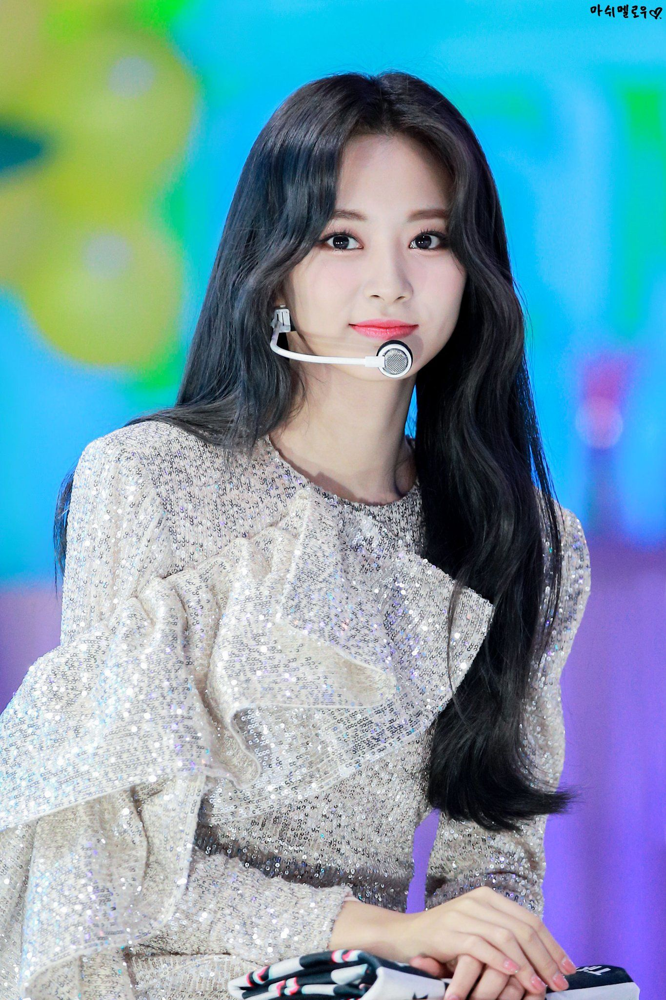

|  | English Name | Chou Tzuyu |
| Korean Name | 쯔위 | |
| Burmese Name | ကျူဝီ | |
| Born | 14.June.1999(Age-23) East District,Tainan,Taiwan | |
| Nationality | Chinese | |
| Alma mater | china | |
| Occupation | K-pop Idol | |
| Years active | 2015-present | |
| Height | 170cm/5'7" | |
| Blood Type | A | |
| Spouse | Single |
Tzuyu was born on June 14, 1999 in East District, Tainan, Taiwan. Her family consists of her parents, a couple who work as self made entrepreneurs and older brother.In 2013, she was seen by talent scouts at the MUSE Performing Arts Workshop in Tainan and traveled to South Korea in November that year to become a K-pop trainee. She joined JYPE in November 15, 2012. After more than two years of training, she appeared on the South Korean reality show Sixteen in 2015, during which she was chosen as one of the nine members of the girl group TWICE.The group made its debut in October 2015. She attended Hanlim Multi Art School in Seoul.Tzuyu graduated on February 11, 2019.
The group name is TWICE. TWICE is composed of nine members: Nayeon, Jeongyeon, Momo, Sana, Jihyo, Mina, Dahyun, Chaeyoung, and Tzuyu. She is a lead dancer, sub-vocalist, visual, and the maknae.Twice made their official debut on October 20, 2015, with the release of their debut EP The Story Begins.The music video for the group's single hit 50 million views on YouTube within five months of their debut and became one of the most-viewed debut music videos for any K-pop group.The group's early success earned them a "Best New Female Artist" award at the 2015 Mnet Asian Music Awards held on December 2."Cheer Up" also received international success, debuting and peaking at number three on the Billboard World Digital Song Sales chart.Additionally, Twice became the only Korean act to place an entry on the U.S. YouTube Music Chart for the year when "Cheer Up" charted at number 25 in May.Still now they won many price on stage.They got 100 wins from show on 13.6.2020.And they got "Best Female Group" Price from 2016 to 2021.
| Year | Song Name | Album Name | Youtube view | Director |
|---|---|---|---|---|
| 2016 | Cheer up | PAGE TWO | 506M | Naive Creative Production |
| 2016 | TT | TWICEcoaster:Lane 1 | 638M | |
| 2017 | Likey | Twicetagram | 580M | |
| 2018 | What is Love | What is Love | 666M | |
| 2018 | Dance the night away | Summer Nights | 341M | |
| 2018 | Yes or Yes | Yes or Yes | 370M | |
| 2019 | Fancy | Fancy You | 540M | |
| 2019 | Feel Special | Feel Special | 440M | |
| 2020 | More and More | More and More | 350M | |
| 2021 | Alcohol-Free | Taste of Love | 250M | Rigend Film |
| 2021 | Scientist | Fomular of Love: O+T=<3 | 130M | |
| 2022 | Talk That Talk | Between 1&2 | 100M | |
| Year | Song Name | Album Name | Youtube view | Director |